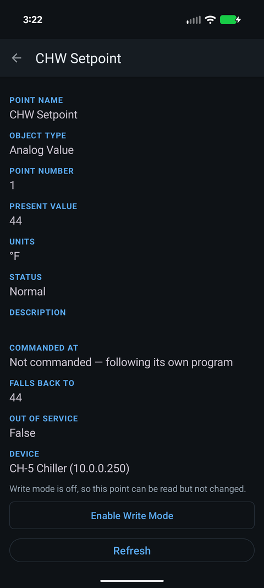
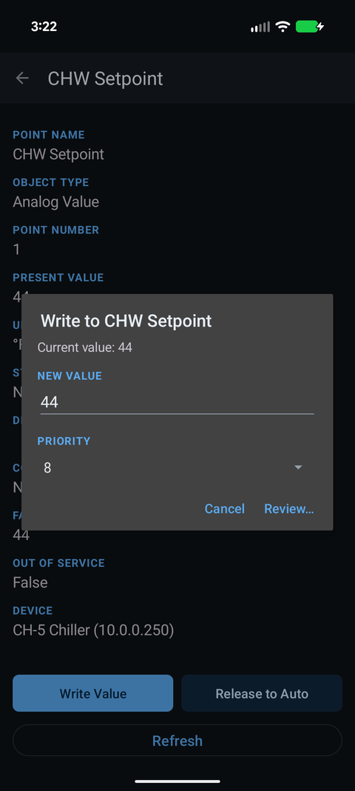
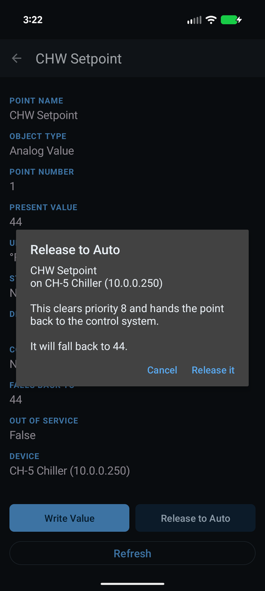

How do I write to a BACnet point with Easy BACnet, and release it afterwards?
Updated 16 September 2026
Turn on Write mode from the menu on the home screen and accept the warning. Open the point, tap Write Value, enter the new value, leave the priority at 8 unless you know better, tap Review, check the summary, then Write it. When you are done, tap Release to Auto on the same point. A BACnet command does not expire on its own; if you do not release it, the point stays where you left it after you drive away.



Why write mode is off, and turns itself off
Easy BACnet opens with writing disabled every single time. This is not a setting it remembers. Someone who picked the app up to read a temperature should never be two taps away from commanding a damper, and a phone left unlocked on a bench should not be able to change a building. Turn it on when you need it; the app turns it off for you when it next starts.
Step 1 — Turn on write mode
On the home screen, open the menu (the three dots, top right) and tap Write mode. Read the warning. It says, in short: a value you write is held at the priority you choose until it is released, it does not time out, and closing the app does not undo it. Tap I understand — turn it on.
Step 2 — Look before you write
Open the point. Two rows matter here:
- Commanded At — whether something is already overriding this point, and at what priority. Not commanded — following its own program means the controller's own logic is in charge. Priority 8 (68) means somebody has already written 68 at priority 8 and it is holding.
- Falls Back To — what the point will do once every override is released. This is the relinquish default.
If the point is already commanded at a higher priority than you are about to use (a lower number), your write will be accepted and ignored. That is BACnet behaving correctly — see BACnet priority and stuck overrides.
Step 3 — Write
Tap Write Value. Enter the new value — for a binary point you pick Active (On) or Inactive (Off) from a list instead of typing. Choose a Priority. The default, 8, is the conventional level for a person with a tool standing in front of the equipment (priority 8 is the “manual operator” level in BACnet), and it is the right choice unless a site standard says otherwise.
Tap Review. You get a summary: the point, the device, the old value, the new value and the priority, and a reminder that this takes command of the point until you release it. Tap Write it.
The app sends the write, waits for the controller to acknowledge, then re-reads the point so what you see is what the device actually did, not what you asked for. If the controller refused, you get its reason in plain words.
Step 4 — Release it before you leave
This is the step that matters. Tap Release to Auto on the point, confirm, and the app writes a release at the priority you used. The point drops back to the next override, or to its Falls Back To value if there is none. Commanded At should now read Not commanded.
A fan commanded on at priority 8 and never released will run until someone notices the energy bill. Releasing is not optional; it is the second half of writing.
Checking what you did
Menu → Session write log lists every write and release this session, with the time, the point, old and new values, the priority, and whether the controller accepted it. Read it before you walk out. If anything is still commanded that should not be, the log tells you where.
Points that will not accept a write
- Input points (Analog Input, Binary Input, Multi-State Input) ignore a write unless the point is Out Of Service, because their value belongs to the physical sensor. The app warns you about this before you try.
- Points with no priority array may still accept a write but cannot be released — there is nothing to release. The app only offers Release to Auto when the point is actually commandable.